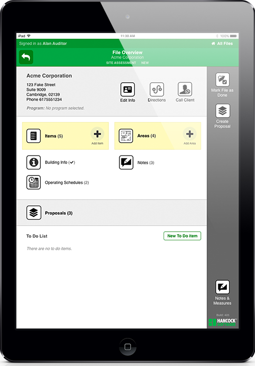
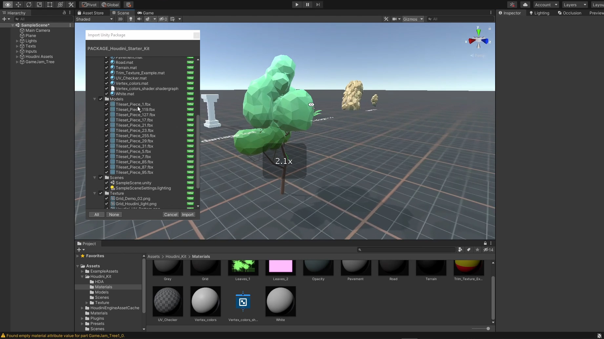

Directly helped customers with their need on backend.

Unity Game Engineer
UNL Agricultural Department - May 2018 to August 2018
My friend Connor Lunn introduces me to his project in UNL where we build a simulation game of farming, I was lucky enough to join the team and build some features in the game, like door open/close animation.
But this work is very short in the end, is kind of like a side project that I do for fun.

Undergraduate student researcher
UNL Hardware Lab - Fall 2016 to Fall 2017
Not making any progress but explore a lot of ML algorithm, training, and some hardware security knowledge.
Good thing is that, made a lot of good friends.
Dish Washer
UNL Stadium Training Table Fall 2015 to Fall 2016
Wash Dishes, but hey, it was my first ever job in US.